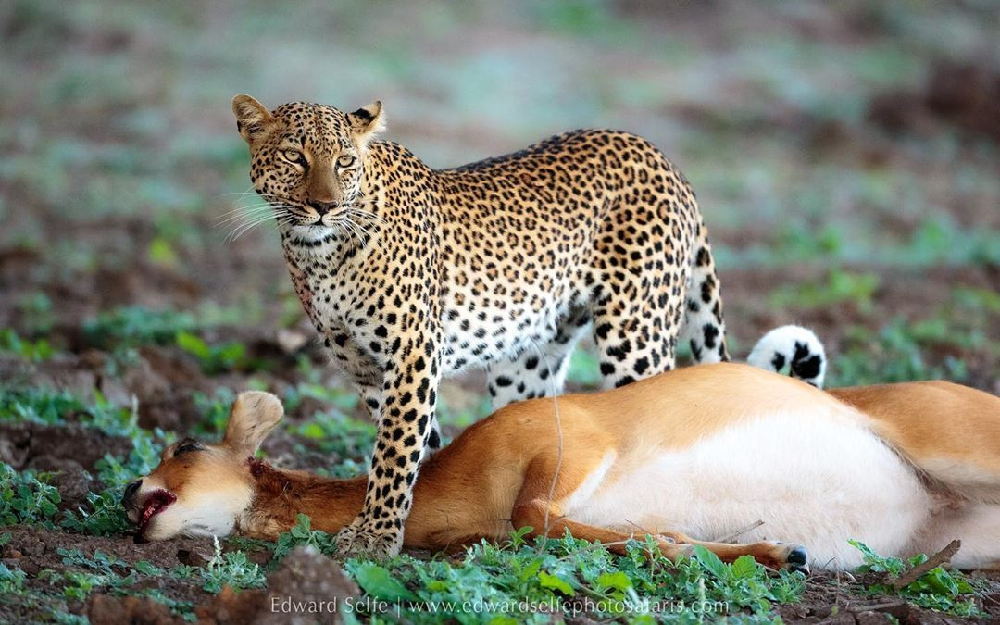

Los leopardos son animales carnívoros y se alimentan principalmente de carne. Cazan diferentes tipos de animales para obtener la energía necesaria para sobrevivir.
Generalmente cazan durante la noche, aprovechando su excelente visión nocturna y su habilidad para moverse silenciosamente entre la vegetación.
Entre sus presas más comunes se encuentran antílopes, monos, aves, reptiles y pequeños mamíferos que viven en su hábitat natural.
Los leopardos pueden subir árboles cargando presas pesadas para protegerlas de otros depredadores como hienas y leones.
